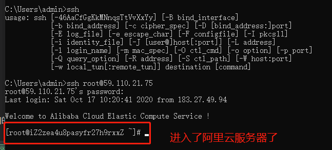
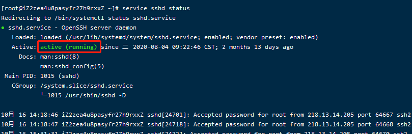
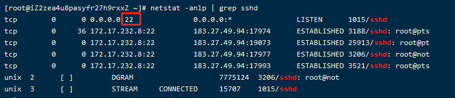
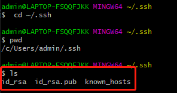
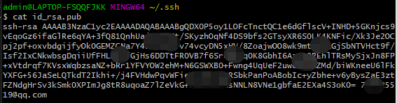
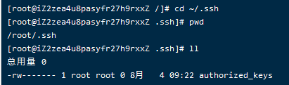

001-免密登录服务器
比如我们阿里云服务器IP是: 59.110.21.75，账号是root
1、密码方式登录
在win上启动git bash。执行下面命令
ssh root@59.110.21.75
然后输入密码，即可登录阿里云服务器

如何不是默认22端口，则加上端口号ssh -p 端口号 账号@IP地址
2、使用ssh免密码登录
- 登录阿里云查看ssh状态
执行命令
# 该命令是centos的，其他系统的自行百度 service sshd status
查看阿里云服务器ssh服务的端口，执行
netstat -anlp | grep sshd
得到下面的截图，说明现在监听的是22端口

如果想要修改默认端口，则执行命令
vim /etc/ssh/sshd_config看到下面内容，把port端口修改下
# The strategy used for options in the default sshd_config shipped with
# OpenSSH is to specify options with their default value where
# possible, but leave them commented. Uncommented options override the
# default value.
# If you want to change the port on a SELinux system, you have to tell
# SELinux about this change.
# 下面的代码提示，如果改了端口，要执行下面的命令
# 比如改为端口10022，那么改后需要执行`semanage port -a -t ssh_port_t -p tcp 10022`
# 然后再重启下`service sshd restart`
# semanage port -a -t ssh_port_t -p tcp #PORTNUMBER
#
#Port 22
#AddressFamily any
#ListenAddress 0.0.0.0
#ListenAddress ::
更多配置信息可以查看2-sshd_config文件的解读
注意配置文件是sshd_config而不是ssh_config，2者都在同级目录下面
- 在本地电脑生成ssh公私钥
如果是以前已经生成过想要查看则可以执行
cd ~/.ssh就可以进入ssh配置目录

因为以前我们生成过就不生成了，可以看到上面的目录结构
查看公钥的内容，复制出来

- 在阿里云服务器也进入ssh目录
cd ~/.ssh

如果linux没有上面目录，则可以执行mkdir -p ~/.ssh创建文件夹
编辑authorized_keys文件vim authorized_keys
把本地电脑的id_rsa.pub复制到阿里云服务器的authorized_keys里面保存
2.4 免密登录服务器
回到本地电脑，执行下面密码
ssh root@59.110.21.75
不再需要密码了
有时候记住IP地址不方便，我们可以写个配置文件。
在本地电脑的ssh目录下，新建config文件（注意文件名就叫config，没有后缀名的）
cd ~/.ssh
vim config
config的内容如下
Host aliyun # 自己起的别名，方便自己记住
Port 22 # 阿里云服务器ssh的端口号
HostName 59.110.21.75 # 阿里云服务器IP地址
User root # 要登录的账号
IdentityFile ~/.ssh/id_rsa # 我们本地电脑的私钥位置，注意这里是私钥
注意上面的注释部分不要写入代码里面